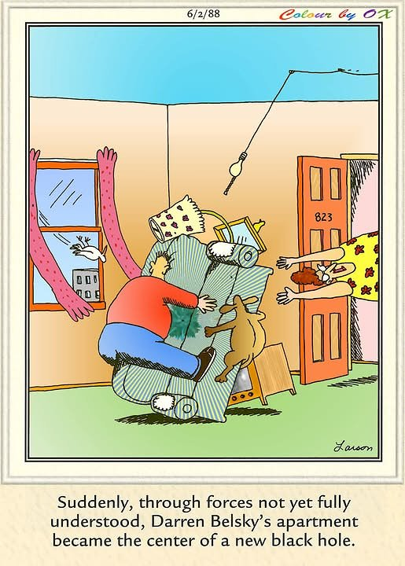

I've always disliked politics — hated it, if I'm honest — mostly because I can never tell who's actually telling the truth. It feels like a game where the truth stays buried under the surface and nobody ever speaks to it directly. Even before my brain tumor that alone could nearly drive me crazy. Since the tumor, it's succeeded. I seem to have zero tolerance left for lies or ambiguity — none of the regulation the “old me” used to have.
I was talking with my daughter about this recently and a couple of things she said cracked something open for me — helped almost immediately, in a way I wanted to pass along.
On a completely different note: any cosmology or physics people out there? I'm endlessly fascinated by infinity and the physics of the universe, down to the quantum scale. To me, it's about as close to proof of God's existence as anything gets. I could go on at length about why — consider yourself warned that I can no longer regulate my own emails on this topic either — but maybe the graphic below does some of the talking for me. It's not exactly a serious cosmology chart. It's a Far Side cartoon about a black hole forming in an apartment. Which, in its own ridiculous way, gets at the same wonder.

Comments